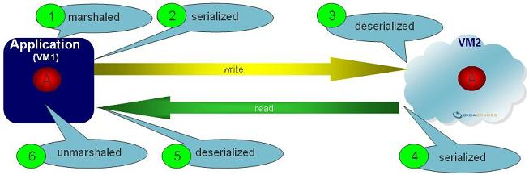
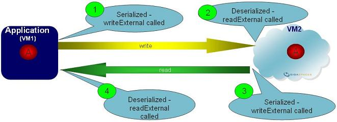

Section Summary: Controlling the Space Object non-primitive serialization mode when written/read from the space.
Overview
GigaSpaces using a unique approach when transporting space objects from one process to another (client-space, space-space). By default, objects are not serialized using the regular Java serialization approach, but using GigaSpaces serialization technology. You have several options to control GigaSpaces serialization:
- Default mode - Active when your Space class doesn't implement Externalizable. You may choose one of the Serialization mode listed below to control the way the space object fields are serialized.
- Implement Externalizable - In this case, only the Native Serialization is supported. This mode allows you to have total control on the object transport.
With the Default mode (when the space class doesn't Implement Externalizable), you can control the serialization mode of Space Class non-primitive fields when they are written or read from the space (remote or embedded) using the following space property:
space-config.serialization-type
Optional Values:
- 0 - Native Serialization (Default)
- 1 - Light Serialization
- 2 - Full Serialization
- 3 - Compressed Serialization
primitive and non-primitive fields
|
Default Serialization Flow
When a client performs a space operation using a remote space (a space running in a different VM than the client program), the POJO non-primitive fields used with the write/update operation, or POJO template non-primitive fields used with the read/take/notify operation are serialized into a special object (packet) and sent to the space. Primitive fields are copied into the packet object. When the POJO or the template packet arrives to the space, non-primitive are de-serialized and their fields (primitive and non-primitive types) are stored within the space using a generic data structure, or it is used to find a matching objects (read/take/notify) in the space. When a read/take operation is called, the matching object data is serialized and sent back to the client program. When the matching object arrives into the client program VM, it is de-serialized and used by the client application.

The POJO fields values and its meta-data information are extracted in run-time (marshaled), and transferred into the space using GigaSpaces generic portable object. When sent back to the client as a result of a read/take operation, the object is de-marshaled and used by the client application.
 writeObject and readObject
writeObject and readObject
If the POJO class implements Serializable interface) with the writeObject() and readObject() methods, these methods are not called when the object is serialized.
Externalizable Serialization Flow
When the Space Class implements the Externalizable interface, readExternal and writeExternal are called, you may control the stream transferred across the network. The Externalizable Support includes details about this advanced option.

 Space Class POJO fields types must be Serializable/Externalizable, since they need to be serialized using the regular Java serialization.
Space Class POJO fields types must be Serializable/Externalizable, since they need to be serialized using the regular Java serialization.
Default mode - Serialization options
Below are the supported serialization modes for non-primitive fields:
| Serialization Mode | Description | ||
|---|---|---|---|
| Native Serialization (0) | Non-primitive fields are transferred to and stored at the space using their Java Native serialization methods. When using the Native serialization mode, the space relies on the implementation of hashCode() and equals() methods when performing matching. You should make sure these are implemented correctly for non-Primitive fields. This mode is optimized when accessing the space in embedded mode.
|
||
| Light (1) | Non-primitive fields are transferred to and stored at the space as marshalled objects com.j_spaces.kernel.lrmi.MarshObject. With this mode there is no need to implement hashCode() and equals() when performing matching on non-primitive fields. | ||
| Full Serialization (2) | Non-primitive fields are transferred to and stored at the space as marshalled objects (see Javadoc). This mode impacts the performance and should be used only when other serialization modes are not viable. | ||
| Compressed (3) | Non-primitive fields are Compressed before transferred into the space and stored within the space in compressed mode. This option is useful when the object includes fields with a relatively large amount of data such as XML data (DOM objects). This mode speeds up the access to remote space and reduces the space memory footprint when dealing with large entries. The compression algorithm using the java.util.zip package. |
| For additional optimization when serializing objects, refer to the Externalizable Support section. |
Embedded Mode
- Native mode – non-primitive Space Object field types are not serialized – the space stores the references of the non-primitive fields. This mode provides the best performance. In multi-threaded environments, be careful when accessing the non-primitive fields after their parent Object has been stored into the space.
- Light/Full Serialization mode – non-primitive Space Object field types are serialized – the space stores a clone of the fields object. This impacts the performance.
Reading and Changing Object in Embedded Mode without Writing it Back
In embedded mode, GigaSpaces do not store the object reference, but stores its non-primitive references (complex fields' references) and the primitive fields data. When you know you might end up with multiple threads accessing the same object, you should clone the entry before you write it and continue and work with the cloned version.
If you read an object from the space and change it without writing it back, you might modify one of its complex type fields that another thread holding its reference. One simple solution for this would be to use the exclusive read lock mode to block other threads from reading the same entry in the same time.
Remote mode
In remote mode, the Object's non-primitive fields are serialized in any case, but the serialization mode determine how it is done:
- Native mode – non-primitive Object fields are serialized using their native serialization. These are de-serialized at the space side before they are stored inside the space.
- Light mode – when non-primitive fields are serialized, they are wrapped with GigaSpaces special Marshaled Object. When stored inside the space, these field are not de-serialized, but stored as in their serialized form. This improves performance, but does not perform matching using thee fields.
- Full mode – supports the JavaSpace specification. When serialized, non-primitive fields are wrapped with a
MarshalledObject. The MarshalledObject is de-serialized at the space side before it is stored, allowing you to perform matching using these fields. This mode is slow compared other options. - Compressed mode – non-primitive fields are compressed before being sent to the space at the client side. These are stored in compressed mode within the space.
With Space Classes that implements Externalizable make sure you use Native Serialization mode. In many cases this is the best way to boost remote space access. Externalizable based classes are not relevant for embedded space mode.